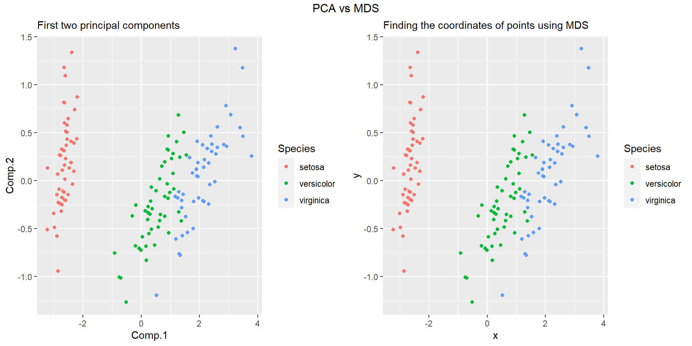

Multidimensional Scaling
Basic Theories and Applications
Ananyo Dey
Kaustav Paul
Shreya Chatterjee
Kaustav Paul
Shreya Chatterjee
What is MDS?
Multidimensional Scaling (MDS) simplifies complex data by projecting it into a lower-dimensional space while preserving relationships. It visualizes similarities/dissimilarities between objects, aiding interpretation. MDS is pivotal in various fields for data visualization and analysis.
Why MDS?
- Dimension Reduction
- Some times instead of exact variables we are provided with similarities or dissimilarities between the data points.
- Helps in finding out clusters in the data.
- Simple to interpret & visualize.
An EXAMPLE
Visiting nine Australian cities.


Basic Setup
Suppose a set of \(n\) objects is under consideration and between each pair objects \((r, s)\) there is a measurement \(\delta_{rs}\) of “dissimilarity”. Dissimilarity may be not synonymous with “distance”.
An Example: Suppose we have 10 bottles of whisky. The dissimilarity might be an integer score between zero and ten given to the comparison of the \(r\) th and the \(s\) the whiskys by an expert judge. The judge would be given a tot from the \(r\) th bottle and one from the \(s\)th and then score the comparison: 0-the whiskies are so alike she/he cannot tell the difference, to 10-the whiskies are totally different.
Some Definitions
Distance Matrix: An \(n \times n\) matrix is called a Distance matrix if it is symmetric and \[d_{rr} = 0 \quad \& \quad d_{rs} \geq 0 \quad \text{for all} \quad r,s\]
Here, distance is not literal. It can be any type of similarity, dissimilarity or usual distance. For example a tea taster may try several flavors of tea and comment on the difference & similarity of tastes between them.
Some Definitions
Euclidean Distance: The Euclidean distance between two points \(p = (p_1, ..., p_n)\) and \(q = (q_1, ..., q_n)\) in \(\mathbb{R}^n\) is given by the formula, \[ d_{rr} = 0,\hspace{1mm} d_{rs} \geq 0, r\neq s. \]
Definition (Euclidean Distance Matrix): A distance matrix is called Euclidean if there exists a configuration of points in some Euclidean space whose interpoint distances are given by ; that is, if for some \(p\), there exists points \(\mathbf{x_1}\), …, \(\mathbf{x_n}\) \(\in \rm I\!R ^p\) such that \[d_{rs}^2 = (\mathbf{x_r} - \mathbf{x_s})^T(\mathbf{x_r} - \mathbf{x_s})\] where \(^T\) denotes the transpose of a matrix.
Definition (Similarity Matrix): An \((n \times n)\) matrix \(\mathbf{C}\) is called a similarity matrix if \(c_{rs} = c_{sr}\) and if \(c_{rs} \leq c_{rr}\) for all \(r, s\).
Some Dissimilarity Measures
- Euclidean Distance: \(\delta_{rs} = \{ \sum_i (x_{ri} - x_{si})^2\}^{\frac{1}{2}}\)
- Mahalanobis Distance: \(\delta_{rs} = (\mathbf{x_r} - \mathbf{x_s})^T(\mathbf{x_r} - \mathbf{x_s})\)
- Minkowski Metric: \(\delta_{rs} = \{\sum_{i} w_i |x_{ri} - x_{si}|^{\lambda}\}^{\frac{1}{\lambda}} , \lambda \geq 0\)
- Bhattacharya Distance: \(\delta_{rs} = \{ \sum_i (x_{ri}^{\frac{1}{2}} - x_{si}^{\frac{1}{2}})^2\}^{\frac{1}{2}}\)
- Bray-Kurtis: \(\delta_{rs} = \frac{1}{p}\frac{\sum_i |x_{ri} - x_{si}|}{\sum_i (x_{ri} + x_{si})}\)
The Data & Basic Goals
Let \(x_1, x_2, ..., x_n\) be \(p\)-vectors containing information about \(p\) variables for \(n\) observations.
Corresponding to these data points we can obtain a ‘Distance Matrix’ \(D\). The objective of MDS is to find out points \(P_1, P_2, ..., P_n\) in \(k\) dimensions \(k \leq p\) such that if \(\hat{d_{rs}}\) denotes the distance between \(P_r\) and \(P_s\), then \(\hat{D}\) is some how similar to \(D\).
So we look for \(f\) is a continuous monotonic function, such that
\[\hat{d}_{rs} \approx f(\delta_{rs}) \]
Nature of Solution
The solution to a MDS problem should be independent of translation, rotation and reflection.
In general, if \(P_1, ..., P_n\) with coordinates \(\mathbf{x_i'}\) = \((x_{i1}, x_{i2}, ..., x_{ip})\), \(i = 1, ..., n\), represents an MDS solution in \(p\) dimensions, then \[\mathbf{y_i} = \mathbf{A}\mathbf{x_i} + \mathbf{b}\] is also a solution, where \(\mathbf{A}\) is an orthogonal matrix and \(\mathbf{b}\) is any vector.
Types of Solution
Methods of solution using only the rank order of the distances \[d_{r_1s_1} < d_{r_2s_2} < ... < d_{r_ms_m}, \quad \quad m = \frac{1}{2}n(n - 1),\] where \((r_1,s_1), ..., (r_m,s_m)\) denote all pairs of subscripts of \(r\) and \(s\), \(r < s\), are titled as non-metric methods of multidimensional scaling.
Solutions which try to obtain \(P\), directly from the given distances are called metric methods. These methods derive \(P\), such that, in some sense, the new distances \(\hat{d}_{rs}\) between points \(P_r\), and \(P_s\), are as close to the original \(d_{rs}\) as possible.
Classical Solution
Classical Solution
- Provided with a dissimilarity matrix \(D\), how to check whether it is an Euclidean distance or not.
- Even if \(D\) is Euclidean how to find out the points of concern.
- We make the transformation \[A = ((a_{rs})), \quad a_{rs} = - \frac{1}{2}d^2_{rs}\]
- We define \(B = HAH\) where \(H = I - \frac{1}{n}11^T\)
Classical Solution
Theorem: Let \(\mathbf{D}\) be a distance matrix and defined by \(\mathbf{B}\) as previous, then \(\mathbf{D}\) is Euclidean if and only if \(\mathbf{B}\) is p.s.d. In particular, the following results hold:
- If \(\mathbf{D}\) is the matrix of Euclidean interpoint distances of a configuration \(\mathbf{Z} = (\mathbf{z_1}, ..., \mathbf{z_n})\), then \[\mathbf{b_{rs}} = (\mathbf{z_r} - \mathbf{\bar{z}})^T(\mathbf{z_s} - \mathbf{\bar{z}}), \quad \quad r,s = 1, ..., n \]
In matrix form it becomes \(\mathbf{B = (HZ)(HZ)}^T\) so \(\mathbf{B} \geq 0\). Note that \(\mathbf{B}\) can be interpreted as the centred inner product matrix for configuration of \(\mathbf{Z}\).
- Conversely, if \(\textbf{B}\) is p.s.d of rank \(p\) then a configuration corresponding to \(\textbf{B}\) can be constructed as follows, let \(\lambda_1 > ... > \lambda_p\) denote the positive eigenvalues of \(\textbf{B}\) with corresponding eigenvectors of \(\mathbf{X} = (\mathbf{x_{(1)}}, ..., \mathbf{x_{(p)}})\) normalized by \[\mathbf{x_{(i)}}^T\mathbf{x_{(i)}} = \lambda_i, \quad \quad i = 1, 2 ,... ,p\]
Then the points \(P_r\), in \(\mathbb{R}^p\) with coordinates \(\mathbf{x_r} = (\mathbf{x_{r1}}, ..., \mathbf{x_{rp}})^T\) (so \(\mathbf{x_r}\) is the \(r^{th}\) row of \(\mathbf{X}\) have interpoint distances given by \(\textbf{D}\)). Further, this configuration has centre of gravity \(\bar{x} = 0\), and \(\mathbf{B}\) represents the inner product matrix for this configuration.
A Practical Algorithm to Classical MDS
Algorithm:
From the previous theorem, we have an idea to obtain the coordinates of the points in a Euclidean space of low dimension \(k\) (\(k\) is usually \(1, 2,\) or \(3\)), when we are given an inter-point distance matrix \(\mathbf{D}\) (may or may not be Euclidean).
Therefore, following is an algorithm that is used in Classical MDS to determine the required solution:
From \(D = ((d_{rs}))\), construct the matrix \(A = ((a_{rs}))\), such that \(a_{rs} = -\frac{1}{2} d^2_{rs}\)
Obtain the matrix \(B\) with elements \(b_{rs} = a_{rs} − \bar a_{i·} − \bar a_{·s} + \bar a_{··}\)
Find the \(k\) largest eigenvalues \(λ_1 > ... > λ_k > 0\) of \(B\), with corresponding eigen vectors \(\mathbf{X} = (\mathbf{x_{(1)}}, ..., \mathbf{x_{(k)}})\) where \(\mathbf{x_{(i)}}^T\mathbf{x_{(i)}} = λ_i, i = 1, \cdots, k\).
The required coordinates of the points \(P_r\) are \(\mathbf{x_r} = (x_{r1}, ..., x_{rp})^T, r = 1, \cdots, k\), the rows of \(\mathbf{X}\).
An Example
Here is a glimpse of Fisher’s iris data set available in R.
| Row Number | Sepal Length | Sepal Width | Petal Length | Petal Width | Species |
|---|---|---|---|---|---|
| 1 | 5.1 | 3.5 | 1.4 | 0.2 | setosa |
| 2 | 4.9 | 3.0 | 1.4 | 0.2 | setosa |
| 3 | 4.7 | 3.2 | 1.3 | 0.2 | setosa |
| 51 | 7.0 | 3.2 | 4.7 | 1.4 | versicolor |
| 52 | 6.4 | 3.2 | 4.5 | 1.5 | versicolor |
| 53 | 6.9 | 3.1 | 4.9 | 1.5 | versicolor |
| 101 | 6.3 | 3.3 | 6.0 | 2.5 | virginica |
| 102 | 5.8 | 2.7 | 5.1 | 1.9 | virginica |
| 103 | 7.1 | 3.0 | 5.9 | 2.1 | virginica |
Application of Classical MDS on iris Data
Before MDS
After MDS
What about starting from a Similarity Matrix!
We may also be provided with similarities among the data points instead of distances (or dissimilarities).
In that case, we can convert a similarity matrix \(\mathbf{C} = ((c_{rs}))\) to a distance matrix \(\mathbf{D} = ((d_{rs}))\), where \[d^2_{rs} = (c_{rr} - 2c_{rs} + c_{ss})\]
Thus we obtained a distance matrix which is Euclidean too.
Now we can apply the previous algorithm on this distance matrix \(\mathbf{D}\) to obtain the coordinates of the points.
Classical Scaling and Principal Components
Duality between Principal Component Analysis and Classical MDS
Suppose \(\mathbf{X}_{n × p}\) is a data matrix (assumed to be centered), with sample covariance matrix \(\mathbf{S}\)
Let \(\mathbf{S}\) has eigen values \({λ_i: i = 1, \cdots, p}\) with corresponding eigen vectors \({\mathbf{e_i}: i = 1, \cdots, p}\) of \(S\). Then the \(i^{th}\) principal component is given by \(u_i = \mathbf{e_i}^T \mathbf{x},(i = 1, \cdots, p)\).
The dissimilarities will be given by \(\delta^2_{rs} = (\mathbf{x_r} - \mathbf{x_s})^T (\mathbf{x_r} - \mathbf{x_s})\)
These dissimilarities are subjected to classical scaling, \(b_{rs} = \mathbf{x_r}^T \mathbf{x_s}\) i.e., \(\mathbf{B} = \mathbf{XX}^T\).
Let the eigenvalues of \(\mathbf{B}\) be \(l_i (i = 1, \cdots, p)\) with associated eigen vectors \(\mathbf{v_i} (i = 1, \cdots, p)\).
The eigen values of \((\mathbf{XX}^T)_{p × p}\) are the same as those for \((\mathbf{X}^T \mathbf{X})_{n × n}\), together with an extra n − p zero eigenvalues.
Therefore we get, \[\begin{equation} \mathbf{XX}^T \mathbf{v_i} = l_i\mathbf{v_i}\\ \mathbf{X}^T \mathbf{XX}^T \mathbf{v_i} = l_i(\mathbf{X}^T\mathbf{v_i})\\ \end{equation}\]
But \(\mathbf{X}^T \mathbf{X e_i} = λ_i\mathbf{e_i}\)
So, \(λ_i = l_i\) and \(\mathbf{e_i} = \mathbf{X}^T \mathbf{v_i}\)
Thus we obtained a duality between principal component analysis and Classical MDS where dissimilarities are given by Euclidean distance.
Observe that, \(\mathbf{e_i}^T\mathbf{e_i} = l_i\)
Now, let \(k \leq p\). So, \[\mathbf{X}[\frac{\mathbf{e_1}}{\sqrt{l_1}}, \frac{\mathbf{e_2}}{\sqrt{l_2}}, \cdots, \frac{\mathbf{e_k}}{\sqrt{l_k}}] = [\sqrt{l_1}\mathbf{v_1}, \sqrt{l_2}\mathbf{v_2}, \cdots, \sqrt{l_k}\mathbf{v_k}]\] i.e., Normalizing \(\mathbf{e_i}\), the first \(k\) component scores are given by the coordinates obtained from classical scaling in k dimensions.
Example:
Let us see how we can implement principal component analysis for iris dataset and compare with solution obtained in classical scaling.
In classical scaling, we obtained coordinates of points in 2-dimensions. So here we will consider first two principal components.
Comparison between the plots:
Optimal Properties of the Classical Solution and Goodness of Fit
Fitting a Configuration
When we are given a distance matrix \(\mathbf{D}\), the objective of MDS is to find the coordinates of the points \(\mathbf{\hat{x}_r}\) in a low-dimensional Euclidean space \(R^k\).
If the configuration \(\mathbf{\hat{X}} = [\mathbf{\hat{x_1}}, \mathbf{\hat{x_2}}, \cdots, \mathbf{\hat{x_n}}]^T\) has inter-point distances \(\mathbf{\hat{D}} = ((\hat{d_{rs}}))\), where \(\hat{d_{rs}}^2 = (\mathbf{\hat{x}_r} - \mathbf{\hat{x}_s})^T(\mathbf{\hat{x}_r} - \mathbf{\hat{x}_s})\), then \(\mathbf{\hat{D}}\) is fitted to \(\mathbf{D}\).
Let \(\mathbf{X}\) be a configuration in \(R^p\), then a fitted configuration in k dimensions can be \(\mathbf{\hat{X}} = \mathbf{XL_1}\), where an orthogonal matrix \(\mathbf{L}\) is partitioned as, \(\mathbf{L}_{p × p} = [\mathbf{L_1, L_2}]\), \(\mathbf{L_1}\) being a matrix of order \((p × k)\).
The distances between rows of \(\mathbf{X}\) are the same as the distances between the rows of \(\mathbf{XL}\), \[d^2_{rs} = \sum_{i=1}^{p} (\mathbf{x_r}^T\mathbf{l_{(i)}}- \mathbf{x_r}^T\mathbf{l_{(i)}})^2\]
The distances between the rows of \(\mathbf{XL_1}\), \[\hat{d}^2_{rs} = \sum_{i=1}^{k} (\mathbf{x_r}^T\mathbf{l_{(i)}}- \mathbf{x_r}^T\mathbf{l_{(i)}})^2\]
Thus \(\hat{d}_{rs} \leq d_{rs}\) implies Reduction in Inter-point Distances due to projection of configuration.
Measure of Discrepancy due to fitting:
A measure of discrepancy between \(\mathbf{X}\) and \(\mathbf{\hat{X}}\) is given by \[\phi = \sum_{r,s=1}^{n}(d^2_{rs} - \hat{d}_{rs}^2)\]
Optimality of the Classical Solution:
The following theorem implies that the classical solution to the MDS problem is optimal.
Theorem:
Let \(\mathbf{D}\) be a Euclidean distance matrix corresponding to a configuration \(\mathbf{X}\) in \(R^p\), and fix \(k (1 \le k \lt p)\). Then among all projections \(\mathbf{XL_1}\), of \(\mathbf{X}\) onto k-dimensional subspaces of \(R^p\), the quantity \(\phi\) is minimized when \(\mathbf{X}\) is projected onto its principal coordinates in \(k\) dimensions.
\[\\[0.01in]\]
We have already seen that solutions obtained by classical MDS coincide with the principal components.
Here we observe that the solution obtained by classical MDS provides the least measure of discrepancies.
Generalisation of Measure of Discrepancy:
When \(\mathbf{D}\) is not necessarily Euclidean, it is more convenient to work with the inner product matrix \(\mathbf{B}\).
Let \(\mathbf{\hat{B}}\) denote the fitted centered inner product matrix \(\mathbf{B}\).
If \(\mathbf{\hat{X}}\) is a fitted configuration with centered inner product matrix \(\mathbf{\hat{B}}\), then a measure of discrepancy between \(\mathbf{B}\) and \(\mathbf{\hat{B}}\) is given by, \[\psi = \sum_{r,s=1}^{n} (b_{rs} - \hat{b}_{rs})^2 = tr(\mathbf{B}-\mathbf{\hat{B}})\]
For this measure also, we can prove that the classical solution to the MDS problem is optimal by the following theorem.
\[\\[0.2in]\]
Generalised version of previous Theorem:
If \(\mathbf{D}\) is a distance matrix (not necessarily Euclidean), then for fixed \(k\), \(\psi\) defined earlier is minimized over all configurations \(\mathbf{\hat{X}}\) in \(k\) dimensions when \(\mathbf{\hat{X}}\) is the classical solution to the MDS problem.
Agreement Measures
The previous theorems suggest possible Agreement Measures for the “proportion of a distance matrix \(\mathbf{D}\) explained” by the \(k\)-dimensional classical MDS solution.
Suppose \(λ_1 \geq λ_2 \geq \cdots \geq λ_k \gt0\), where \(k \lt n\), are \(k\) non-negative eigen values of \(\mathbf{B}\). Then the Agreement Measures are \[\alpha_{1,k} = \frac{\sum_{i=1}^{k} λ_i}{\sum_{i=1}^{n} |λ_i|} × 100 \%\] and \[\alpha_{2,k} = \frac{\sum_{i=1}^{k} λ_i^2}{\sum_{i=1}^{n} λ_i^2} × 100 \%\]
Example:
The two agreement measures obtained from iris data set are, \[\alpha_{1,2} = 97.7685\%\] and \[\alpha_{2,2} = 99.9627\%\]
Thus the two dimensional classical MDS solution explains a huge proportion of the original dissimilarity matrix.
Nonmetric Multidimensional Scaling (NMDS)
Introduction
Here we are going to discuss some basic theory for the nonmetric multidimensional scaling. This theory is developed in the 1960s. This approach is often most appropriate when the data is presented as a similarity matrix.
In this non-metric approach \(D\) is not thought of as a distance matrix but as a dissimilarity matrix. In this situation the transformation from similarities to distances is somewhat arbitrary and greater similarity implies less dissimilarity.
Why NMDS ?
In the MDS is the assumption that there is a “true” configuration in \(k\) dimensions with interpoint distances \(\delta_{rs}\). We wish to reconstruct this configuration using an observed distance matrix \(D\) whose elements are of the form \[d_{rs} = \delta_{rs} + e_{rs} \] the \(e_{rs}\) represent errors of measurement plus distortion errors arising due to the distances do not exactly correspond to a configuration io \(\mathbb{R}^k\)
But in some situations it is more realistic to assume a less rigid relationship between \(d_{rs}\) and \(\delta_{rs}\) such as, \[d_{rs} = f(\delta_{rs} + e_{rs}) \] where f is an unknown monotone increasing function. For this model, the only information we can use to reconstruct the \(\delta_{rs}\) is the rank order of the \(d_{rs}\) instead of taking the actual values.
The use of ranks omits some of the issues associated with using absolute distance (e.g., sensitivity to transformation), and as a result is much more flexible technique that accepts a variety of types of data. (It’s also where the “non-metric” part of the name comes from.)
How do we measure dissimilarity matrix ?
It is assumed that dissimilarities \(\{\delta_{rs} \}\) have been calculated for the set of objects. The set \(X\) is often taken as \(\mathbb{R}^2\) and \(d\) as distance, although others are sometimes used, for example \(\mathbb{R}^3\) and the Minkowski Metric or Bray-Curtis measure.
One theoretical point, once we are using this method for estimating the disparities, the nonmetric multidimensional scaling problem becomes one of the finding an appropriate algorithm for the minimizing a loss function (we will talk later about it).
An example for approaching via non-Euclidean distances
Let’s consider an example of species counts for three sites to explore the biodiversity.
Site Species_1 Species_2 Species_3 A 0 1 1 B 1 0 0 C 0 4 4 If we were to produce the Euclidean distances between each of the sites, it would look something like this:
\(Distance_{AfromB} = \sqrt{(0-1)^2 + (1-0)^2 + (1-0)^2} = 1.732\)
\(Distance_{BfromC} = \sqrt{(1-0)^2 + (0-4)^2 + (0-4)^2} = 5.744\)
\(Distance_{AfromC} = \sqrt{(0-0)^2 + (1-4)^2 + (1-4)^2} = 4.243\)
An example for approaching via non-Euclidean distances
If we use the Bray-Curtis similarity metric, which is defined in before hand. Using a Bray-Curtis similarity metric, we can recalculate similarity between the sites.
\(Distance_{AfromB} = \frac{|0-1|+|1-0|+|1-0|}{|0+1|+|1+0|+|1+0|} = 1\)
\(Distance_{BfromC} = \frac{|1-0|+|0-4|+|0-4|}{|1+0|+|0+4|+|0+4|} = 1\)
\(Distance_{AfromC} = \frac{|0-0|+|1-4|+|1-4|}{|0+0|+|1+4|+|1+4|} = 0.6\)
From the above we got
Sites A and B are most similar. But it goes against according to the ecologist.
But they think A and C are similar as it contain same number of the species compositions which is reflected by the Bray-Curtis measure.
Configuration of points
Shepard-Kruskal Algorithm
Some Background work and notions
Shepard (1962a, 1962b) was the first to produce an algorithm for NMDS, although he did not use loss functions. His method was first to rank and standardize the dissimilarities such that the minimum and maximum dissimilarities were 0 and 1 respectively. The loss function is defined by: \[ \sigma(\theta,\hat{y}) = \sum_{i=1}^n w_i(\hat{y_i}-f_i({\theta}))^2\] with known weights.
Kruskal (1964a, 1964b) generalizes this idea. Given a dissimilarity matrix \(D\) , order the off-diagonal elements so that \[ d_{r_1s_1} \leq d_{r_2s_2} \leq \cdots \leq d_{r_ms_m}, \hspace{4mm} m=\frac{1}{2}n(n-1)\] where where \((r_1, s_1), \cdots, (r_m, s_m)\) denote all pairs of unequal subscripts \(r_i < s_i\). We will say that number \(d_{rs}^*\) are monotonically related to the \(d_{rs}\) if \(d_{rs} < d_{uv} \Rightarrow d_{rs}^* \leq d_{uv}^* \hspace{3mm} \text{for all} \hspace{3mm} r<s, u<v ...... (C_1)\)
Let \(X_{n \times k}\) be a configuration in \(\mathbb{R}^k\) with interpoint distances \(\hat{d_{rs}}\) where \(\hat{d_{rs}} = f(d_{rs})\) where \(f\) is a monotone function. Note we are deliberately ignoring the tie cases.
Stress function
Define the (squared) stress of \(\hat{X}\) by \[S^2(\hat{X}) = \text{min} \sum_{r<s} \frac{(d_{rs}^* - \hat{d_{rs}})^2}{\sum_{r<s} \hat{d_{rs}}^2}\] where minimizing is taking under \(d_{rs}^*\) is taken over when it satisfies \(C_1\). The minimization represents the least squares monotone regression of \(\hat{d_{rs}}\) on \(d_{rs}\).
For each dimension \(k\) the minimum stress function is calculated where minimum stress value calculation obtained by \(S_k = \underset{\hat{X}_{n\times k}}{\text{min}} \hspace{1mm} S(\hat{X})\)
For the cut off there is thumb rule back ground that is,
Stress > 0.2: Likely not reliable for interpretation
Stress > 0.1: Likely fine for interpretation
Stress < 0.05: Likely good for interpretation
Advantages
Shepard-Kruskal algorithm is invariant under rotation, translation, and uniform expansion or contraction of the best-fining configuration.
It is nonparatric method as it is working with the ranks of the orders.
It can take care of the missing values and also with the ties after some modification.
An Example
| Plot ID | Habitat | Holcus_lanatus | Cerastium_fontanum | Trifolium_repens | Lychnis_flos-cuculi | Calliergonella_cuspidata | Potentilla_palustris | Eleocharis_palustris | Carex_nigra | Menyanthes_trifoliata |
|---|---|---|---|---|---|---|---|---|---|---|
| 13 | Grassland | 20 | 9 | 0 | 4.0 | 18.0 | 0 | 2.0 | 8.0 | 5.0 |
| 14 | Grassland | 65 | 4 | 0 | 0.0 | 2.0 | 0 | 0.0 | 4.0 | 0.0 |
| 15 | Grassland | 2 | 6 | 18 | 7.1 | 1.0 | 0 | 2.0 | 8.1 | 0.0 |
| 16 | Marsh | 8 | 0 | 0 | 0.0 | 70.2 | 0 | 10.3 | 50.0 | 0.0 |
| 17 | Marsh | 5 | 3 | 0 | 0.0 | 50.0 | 0 | 0.0 | 0.0 | 22.3 |
| 18 | Marsh | 0 | 0 | 0 | 0.0 | 55.0 | 2 | 6.0 | 11.0 | 0.0 |
Solution of NMDS obtained from grass data
Goodness fit
Shepard Diagram
- The plot shows how much it is good, here we trying to plot the \(d_{rs}\) on the horizontal axis and \(\delta_{rs}\) on the vertical axis, we obtain Shepard Diagram. This shows how the dissimilarities and the approximated distances are related to each other.
Shepard Diagram for the grass data
Shepard Diagram
- The plot shows how much it is good, here we trying to plot the \(d_{rs}\) on the horizontal axis and \(\delta_{rs}\) on the vertical axis, we obtain Shepard Diagram. This shows how the dissimilarities and the approximated distances are related to each other.
Shepard Diagram for the grass data
Some of the observations
The stress value is 0.18485 so the fitting is very good enough.
The \(R^2\) value is too large i.e. \(96.6\%\) variability is being explained, so its a very good fit than linear one.
The red line the smoothing function of the points.
Procrustes Rotation
We will now discuss about a goodness of fit measure used to compare two configurations. Let \(X\) be the \((n \times p)\) matrix of the coordinates of \(n\) points obtained from \(D\) by one technique. Suppose that \(Y\) is the \((n \times q)\) matrix of coordinates of another set of points obtained by another technique, or using another measure of distance. Let \(q \leq p\) (you may work with \(n \times p\))
The measure of goodness of fit adopted is obtained by moving the points \(\mathbf{y_r}\) relative to the points \(\mathbf{x_r}\) until the residual sum of squares \[\sum_{r=1}^n = (\mathbf{y_r} − \mathbf{x_r})′ (\mathbf{y_r − x_r})\] is minimal.
We can move \(\mathbf{y_r}\) relative to \(\mathbf{x_r}\) through rotation, reflection and translation, i.e. by \[A^{'} \mathbf{y_r} + \mathbf{b}, \hspace{2mm} r = 1, \cdots, n \] where \(A^{′}\) is a \((p \times p)\) orthogonal matrix. Hence, we wish to solve \[ R^2 = \underset{\mathbf{A,b}}{\text{min}}\sum_{r=1}^n (\mathbf{x_r − A^{′}y_r − b})′(\mathbf{x_r − A^{′}y_r − b})\]
Theorem
For solving the equation quite difficult. So for that here theorem helps us.
Let \(X_{n \times p}\) and \(Y_{n \times p}\) be two configurations of \(n\) points, for convenience centered at the origin, so \(\bar{x} = \bar{y} = 0\). Let \(Z = Y^{′}X\) and using the singular value decomposition theorem, write \[Z = V \Gamma U′\] where V and U are orthogonal (p × p) matrices and Γ is a diagonal matrix of non-negative elements. Then the minimizing values of \(\mathbf{A}\) and \(\mathbf{b}\) for \(R^2\) defined earlier are given by \(\hat{b} = 0\), \(\hat{A} = VU^{′}\), and further \[R^2 = tr(XX′) + tr(YY′) − 2tr(\Gamma)\]
References
- Multivariate Analysis; Mardia K. V., Kent J. T., Bibby J. M., United States edition (1995)
- Multidimensional Scaling; Cox T. F., Cox M. A. A., 2nd edition (2000)
- Introduction to Multidimensional Scaling; Schiffman S. S., Reynolds M. L., Young F. W., United Kingdom Edition (1981)
- Modern Multidimensional Scaling; Borg I., Groenen P (1997)
- Multidimensional Scaling: Infinite Metric Measure Spaces; Kassab L (Spring 2019
Thank You :))
Indian Statistical Institute, Delhi
Comments and Conclusion
Recall Classical Scaling, we define \(\mathbf{B = (HX)(HX)^{T}}\) where \(\mathbf{H}\) is the centering matrix. Suppose \(\mathbf{B}\) is not positive definite matrix then adding proper constant \(c\) and forming the new dissimiarities, \(\{\delta_{rs}'\}\) as \(\delta_{rs}' = \delta_{rs} + c (1 - \delta^{rs})\), where \(\delta^{rs}\) will make \(\mathbf{B}\) positive semi-definite. Once \(\mathbf{B}\) has been performed, a Euclidean space can be found as before.
Note there are many other ways for Multidimensional Scaling.
For the Metric method Metric Least Square Scaling is one of the famous one. Here are trying to minimize our loss function suggested by Sammon (1969) \[S = \frac{\sum_{r<s}\delta_{rs}^{-1}(d_{rs} - \delta_{rs})^2}{\sum_{r<s} \delta_{rs}}\] numerically.
For nonmetric method Guttman’s Approach defined a loss function called the coefficient of alienation which was basically equivalent to the stress function of Kruskal, but which led to a different algorithm for minimization.